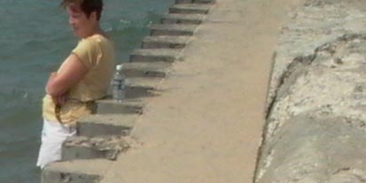
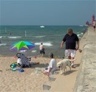

Некоторые практические приёмы съёмки пейзажа
Глава III. Чёткость
Хотя в большинстве случаев фотографирования на цифровую камеру проблем с резкостью и чёткостью снимка не возникает, но всё-таки давайте вспомним тут базовые основы, которые необходимо знать и применять на практике. Я бы не говорил тут об этих основных положениях, если бы мой опыт переписки с фотографами не свидетельствовал бы о том прискорбном факте, что больше половины фотолюбителей не знают даже этих основ. Тому читателю, который знает основные положения, применимые как в цифровой фотографии, так и в "плёночной", либо уже знаком со статьёй "Как повысить чёткость снимка при съёмке пейзажей", предлагаю щёлкнуть мышкой здесь, чтобы перейти к особенностям, присущим только цифровым камерам. Впрочем, не будет вредным освежить свои знания, благо, что эта часть всей статьи имеет не такой большой размер, как предыдущие и заключительная.
Глубина резко-изображаемого пространства
Одним из основных принципов пейзажной съёмки является положение, что всё должно быть резко. Даже если Вы снимаете в тумане, то обратите внимание, что туман не размывает границ объектов, как это делает, к примеру, диффузионный фильтр; действие тумана проявляется в создании так называемой цвето-тональной перспективы, которая позволяет выявить глубину кадра посредством преобразования цвета, а не формы и очертаний. Исходя из этого, Вам следует позаботиться о максимальной глубине резкости, и эта задача решается использованием минимально-возможных отверстий диафрагм, то есть тех, которым принадлежат большие числа, их обозначающие.
Так, например, при диафрагме f2.0 Вы получите минимальную глубину резкости, что больше подходит для портретной съёмки, а при значении f8 - максимальную для Вашего фотоаппарата (если это значение является для него предельным). Посмотрите на Фото 9, на котором изображён пейзаж, снятый с использованием диафрагмы f8: глубина резкости достаточна для того, чтобы хорошо проработались как ближний план, находящийся на расстоянии примерно в пол-метра, так и дальний, расположенный примерно в тридцати метрах от камеры.
Тем не менее, не следует думать, что при f8 Вы сможете передать всё пространство, находящееся в пределах от сантиметра до бесконечности, резким, это не так. Такое произойдёт только при уменьшении диафрагмы до значения f64, которого нет у Вашего фотоаппарата. Это число уже близко́ к диафрагме камеры-обскуры, вся оптика которой состоит из проколотого булавкой отверстия в передней стенке камеры, и как раз и равняется f64...f128. Также стоит отметить, что использование минимальных диафрагм нецелесообразно в случаях, где требуется отделить фон от основного объекта съёмки; так, например, при съёмке одинокого цветка на фоне остального поля, нам необходимо выделить его, отделить его от толпы, чтобы не получить каши и пестроты - вот тут как раз и поможет использование больших диафрагм. Однако, такая съёмка живой природы уже не является пейзажной в классическом смысле этого жанра, поэтому ограничимся уже сказанным и пойдём дальше.
Иногда, в условиях плохой освещённости, использование больших величин диафрагм чревато получением длинных времён выдержек. Поэтому, для выдержек длиннее 1/20 следует использовать штатив. Хотя, конечно же, стоит оговориться, что наверное, существуют талантливые, но экономные, фотолюбители, которые могут вообще обходиться без штатива, проявляя феноменальную способность стоять десятки секунд как вкопанные, держа камеру в руках. К ним это правило неприменимо, как и все остальные правила.
Использование штатива
Кроме того известного удобства, что штатив позволяет нам всегда снимать с теми величинами диафрагм, которые нам требуются для реализации наших творческих планов, штатив обладает и другим, не менее полезным, преимуществом. Речь идёт о продуманности композиции Вашей работы. Когда камера закреплена на штативе, Вы гораздо иначе относитесь к процессу съёмки. У Вас есть время подойти-отойти, приглядеться, подумать, хорошенько всё скадрировать и удалить лишние травинки, не торопясь просчитать необходимую диафрагму, установить требуемые фильтры. Поэтому я очень рекомендую использовать штатив, а сам использую его практически всегда, независимо от времени суток и освещённости. Если предположить, что женщина - друг человека, то штатив - неразлучный друг фотографа. Я исключительно поддерживаю все меры, которые можно только предпринять, толкающие авторов к серьёзному размышлению над каждым будущим кадром. Использование штатива - одна из таких мер.
Использование автофокуса
Скажу пару слов про использование автофокуса. К сожалению, подавляющее большинство камер обсуждаемого класса либо вообще не обладает возможностью ручной фокусировки, либо обладает, но выполненной таким причудливым образом, что её использование по силам только высокогениальному фотографу. Чудность и извращённость ручных фокусировочных систем превосходит все правила приличия. В одних камерах фокус можно навести, глядя на мигающий зелёный огонёк, который мигает практически всегда, в других - по шкале метража, как в незабвенной Смене-8М. Помнится, к своей Смене мне пришлось покупать дальномерную систему, чтобы определять расстояния не на глаз, а по приборам. Так что хочется нам того, или не хочется, но в большинстве случаев мы вынуждены пользоваться автоматическим определением расстояния до объекта.
Думаю, что каждый для себя уже решил, каким именно из имеющихся режимов автофокуса ему удобнее пользоваться. Использование нормального, центровзвешенного режима приемлемо в большинстве ситуаций, использование же точечного автофокуса - в тех случаях, когда Вы выбрали главный объект съёмки, находящийся далеко не в центре кадра и решили предварительно зафиксировать фокус на нём. С другой стороны, если Вы снимаете разнотравье необъятного поля, с довольно низкой точки съёмки, то случайно попавшая в центр кадра высокая травинка может нарушить Ваши планы, привлеча всё внимание автофокусной системы на себя. Поэтому каким способом пользоваться - зависит от каждой конкретной полевой ситуации.
Поскольку фотограф-пейзажист часто снимает на закате или восходе, а также в тумане, то ему часто приходится сталкиваться с одним неприятным явлением - фокус никуда не наводится, блуждая вперёд-назад, издевательски подмигивая зелёным глазом, примерно как подзагулявший муж, возвратившийся наконец-то домой, к жене, в приподнятом настроении. Недавно я с радостью обнаружил хорошее отрезвляющее автофокус средство: в таких ситуациях следует просто повернуть фотоаппарат вокруг своей оси, так, чтобы диагональ кадра приняла горизонтальное положение. Почему-то при таком неуважительном отношении камера сразу отрезвляется и начинает нормально соображать. Прижав слегка кнопочку спуска затвора, фиксируется фокус, и камера возвращается в нормальное положение для съёмки кадра. Этот метод очень действенный: проверьте его на практике и Вы не пожалеете.
Функция изменения резкости (sharp) в фотокамере
Многие камеры этого класса имеют возможность регулировать уровень резкости (sharp) при съёмке: понижать его или повышать. Результат предлагается оценивать по крохотному изображению на экранчике сзади камеры. Посмотрите на Фото 10. Слева изображены три снимка, снятые со штатива с одного и того же места. Справа я вырезал кусочки этих снимков, в размере натуральных пикселов. Все фрагменты вырезаны с одного и того же места, что даёт нам возможность их сравнивать.
| A. Low sharp |  |
 | |
| B. Normal sharp |  |
|  | |
| C. High sharp |  |
 |
Какой из фрагментов Вам нравится более? -Мне тоже этот. Но давайте всё-таки помнить о том, что нам ещё предстоит обрабатывать снимок в ФотоШопе, где на большом экране будут видны все нюансы, и мы сможем применить Unsharp Mask в той мере, в какой нам захочется, а не в той, которую заложили в нашу камеру конструктора из страны Восходящего Солнца. Кроме того, ФотоШоп позволит нам изменить резкость, используя три параметра, в то время как ещё неизвестно, каков алгоритм "мозга" камеры. Причём очень маленького мозга, хочется мне сказать. Применение излишнего уровня sharp хотя и делает фотографию более резкой, но зачастую настолько неестественной, что часто придаёт термину "цифровое фото" негативный оттенок.
Формат записи изображения
Если Вы человек по жизни экономный, то перед Вами стоит дилемма - какой формат из имеющихся в Вашей ненаглядной камере использовать для записи изображений. Камеры этого класса могут предложить Вам формат TIFF и несколько градаций формата JPEG. Использование формата JPEG позволяет сохранить гораздо больше фотографий на одной карточке памяти, но с плохим качеством. Это напоминает известную сказку про то, как много шапок можно пошить из одной шкуры: можно одну хорошую, а можно десять, но очень маленьких. Кроме этого, большинство камер позволяет Вам менять пиксельные размеры снимка, что также приводит к изменению объёма памяти, занимаемого одной фотографией. Для примера я привёл таблицу для своего фотоаппарата.
| Размеры | JPEG 1 | JPEG 2 | TIFF |
| 2240×1680 | 64 | 32 | 5 |
| 1600×1200 | 124 | 64 | 10 |
| 1120×840 | 242 | 124 | 20 |
| 640×480 | 484 | 298 | 59 |
Как я уже сказал выше, я приветствую все возможные решения, заставляющие фотографа больше думать над снимком. Применение форматов максимального размера - одно из таких решений. В идеале было бы прекрасно, если бы Ваша камера имела бы только один кадр без возможности его удаления - Вы бы сто раз подумали над своим снимком, прежде чем нажать на кнопку. Когда я снимал фильмы на любительскую кинокамеру Super 8мм ( может, кто помнит такую плёнку?), я всегда знал, что плёнки хватит только на три минуты, зато потом я буду сидеть в ванной два часа, обрабатывая её. Поэтому приходилось подробно продумывать сюжет, композицию, свет и продолжительность кадра. После того, как я приобрёл видеокамеру, в которую влазило в десять раз больше, и потом можно было стирать и заново записывать, я просто перестал думать. Результат - ничего ценного в снятом за последние 10 лет...
Распространение цифровых технологий, также, как и минилабов Kodak, привело фотографию к такому же печальному результату. Не стоит думать, что если Вы снимете 484 кадра на одну карточку, то исходя из теории вероятностей, у Вас получится в сто раз больше хороших кадров, чем при использовании больших форматов, таких, которых помещается только пять. Скорее, всё произойдёт с точностью до наоборот: среди пяти кадров будет в сто раз больше хороших, чем среди 484-х, потому что среди этих пяти сотен вообще не будет ни одного приличного кадра. Таким образом, количество переходит в качество, при уменьшении первого.
Как человек, чьи фотографии иногда печатаются в разных журналах, скажу Вам вот ещё что. Редакторы печатных изданий всегда требуют давать им работы хорошего качества, с разрешением не менее 300dpi. Представьте себе, Вам прислали письмо с просьбой дать конкретную фотографию для публикации, (экономные, внимание!) - за гонорар. Редактор требует от Вас фотографию размером 10 на 15 сантиметров с разрешением 300dpi. После примитивных подсчётов оказывается, что Ваш файл должен иметь размеры 1200х1800пикселов. И это ещё божеские требования, иногда нужна фотография на обложку 20х30... Что Вы скажете такому редактору? Что у Вас фотография имеет размер всего лишь 480х640, то есть 4х6см? Если бы я был бы редактором, то я бы дружески порекомендовал бы вклеить эту фотографию в Ваш паспорт. Это, конечно, шутка, но учтите, в ней есть 100 процентов правды.
Техническая фактура
В заключение этой главы поговорим немного о том, что я называю технической фактурой. Речь тут не идёт о той фактуре, которую Вы снимаете: шероховатой стене, мокром стекле и фактуре песчаных дюн. Эта фактура - элемент Вашего творческого замысла, её присутствие обдумано и контролируется Вами. С другой стороны, после запоминания снимка в формате сильного сжатия, либо при съёмке на высокочувствительную матрицу, Вы, сами не желая того, получаете на снимке какие-то артефакты, разбросанные по всему полю, и зерно. А может, ещё и цветовой шум. Всё это приводит к тому, что на снимке самостоятельно создаётся "техническая", не художественная фактура, которая как полупрозрачное стекло стоит между изображением на фотографии и зрителем. Чем это плохо? Недавно я прочитал книгу, посвящённую психологии восприятия визуальных образов, в которой, кроме всех прочих интересных вещей, было сказано следующее.
Наличие фактуры на снимке "запирает" пространство и перспективу. Все Ваши ухищрения с подбором правильных диагоналей для создания геометрической перспективы, а также съёмка в туманную либо мглистую погоду, с целью создания цвето-тональной перспективы будут сведены на нет неизвестно откуда появившейся фактурой на снимке. Взгляд зрителя, остановившись на этой фактуре, не проникает далее её.
Так что я ещё раз призываю Вас не жлобствовать, и снимать таким образом, чтобы качество получившейся фотографии было максимально-возможным, чтобы потом можно было бы приступить к спокойной обработке хорошей основы в ФотоШопе, в то время, как из плохого снимка в основе не сделаешь хорошую фотографию, хоть ты тресни. Вопреки распространённому желанию сделать конфетку из всем известного вторичного продукта, на практике мы ежедневно сталкиваемся в обратным процессом. Если компьютерную обработку принято сравнивать с печатью фотографии в тёмной комнате, то давайте быть и тут последовательными - из плохого негатива не получишь хорошую фотографию. То же самое и в ФотоШопе - ничего не получится.
← Глава II. Цвет | Глава IV. Компьютерная обработка → |